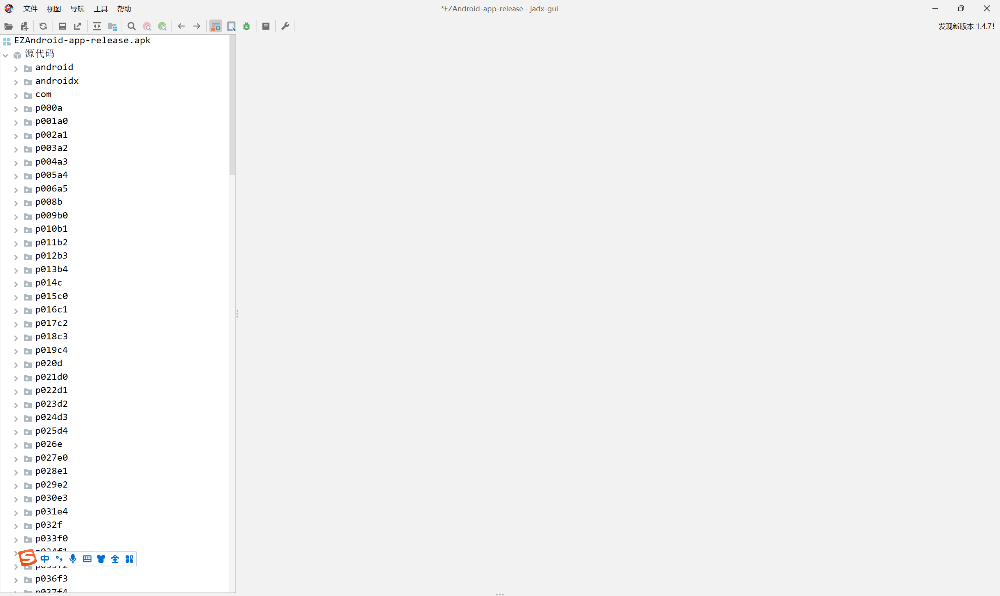

TSCTF-J 2023 Reverse The_Native WP
这次浅浅出了一道题，安卓逆向，其实相当简单，只要下载工具并且有一点点的安卓开发经验就行了（甚至都没加花加壳~~（原来打算 OLLVM 的，后来想想估计得零解就没弄）~~）。
解法
对于 APK 文件，有个很好用的工具：jadx-gui。
安装完成后，直接把 apk 拖到这个工具里面打开：

我们知道，通常java的软件包名都是域名反写。于是我们可以直接点进 com.linjhs.ezandroid（这道题刚开始我出的时候，名字叫做 EZAndroid，后来为了剧情需要改了一下文件名，但是包名什么的没有改），点开 MainActivity。
其中，下面这个是第一部分的加密函数（反正RE不考怎么算法，我直接就是异或加密）。
但是我们会发现找不到 MyString() 和 Cal() 这两个函数~~（我现在才发现我忘记用小驼峰命名了，虽然但是这并不重要）~~。
如果有接触过安卓开发的同学可能会比较熟悉，这个就是 NDK 开发（Native Development Kit）。这一部分的代码不是用 Java 实现的，而是用 C/C++ 实现的。
所以我们打开直接解压缩安装包，可以找到 .so 文件。
直接丢进 IDA。
然后在导出表里面搜索上面两个函数
前面这串字符串是默认带的（在开发中就叫这个名字，所以不用管）。

这个函数生成的就是前面的 MyString 字符串。
红框部分就是第二部分的加密部分，其他部分就是一些格式转换封装之类的（jstring 转 String 好像是，忘记叫啥名字了，太早写的了懒得去翻源代码了）。
所以我们直接拿前面的 MyString 进行两次异或，就可以获得答案了。
很简单，exp 自己写吧。